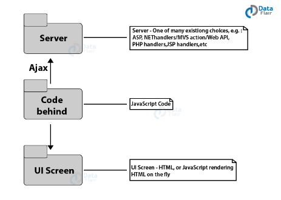

Principais Informações
A arquitetura do site
os problemas da grande quantidade de dados e das limitações de infraestrutura nosso site realiza uma chamada local, onde estão os .jsons, simulando uma chamada ao servidor. Então, na figura ao lado, em vez de um servidor teremos uma pasta local.
Referências
- http://paineis.cgu.gov.br/lai/index.htm
- http://www.portaldatransparencia.gov.br/beneficios/auxilio-emergencial?uf=GO&municipio=18058&de=01/07/2020&ate=31/07/2020&tipoBeneficio=6&ordenarPor=beneficiario&direcao=asc
- http://www.portaltransparencia.gov.br/pagina-interna/603519-download-de-dados-auxilio-emergencial
- https://www.gov.br/pt-br/noticias/assistencia-social/2020/06/dados-sobre-pagamento-de-auxilio-emergencial-podem-ser-consultados-no-portal-da-transparencia
- http://www.portaldatransparencia.gov.br/beneficios/auxilio-emergencial?uf=GO&municipio=18058&de=01/07/2020&ate=31/07/2020&tipoBeneficio=6&ordenarPor=beneficiario&direcao=asc
- http://www.planalto.gov.br/ccivil_03/_ato2019-2022/2020/decreto/d10316.htm